The Ice Witch is an origin story. But origin stories have a problem on social media: they start slow, and viewers don't wait. So before a single frame of Aelira's childhood, we open twenty-five winters later — a hooded prisoner dragged through a screaming mob, tied to the stake, and set on fire. The town celebrates. Then the fire dies, the temperature drops, and the woman they tried to burn shows them what a monster really looks like.
Hooks that go straight into action hold viewer retention far better than a linear opening. When the carnage ends and the title card reads "25 Winters Earlier," the audience isn't watching a backstory anymore — they're watching an answer to a question: how did she become this?
This is the complete breakdown of how the hook was made: the exact Midjourney prompts behind every character and the location, why we deliberately avoided Nano Banana Pro, the Dreamina-to-Higgsfield pipeline, and the full Seedance 2.0 prompt for every section of the sequence.
Character Design in Midjourney
Studio-lit reference sheets, built like a real casting and wardrobe session.
Every character starts as a reference sheet: one frontal close-up for identity, one full-body for wardrobe, generated in a single 16:9 frame against a clean studio backdrop. Bright, even lighting — not because the film looks like that, but because the video model needs clean information. Mood comes later; references are for facts.
Aelira, the Ice Witch
The hook needs her twice: hooded and unknowable during the march, revealed when the fire dies. We generated the base prisoner look in Midjourney, then took her into ChatGPT to swap in our actual main character's face — once with the hood up, once with the hood down — so the woman burned at the stake is unmistakably the same woman from the origin story.
Midjourney prompt — Aelira
Live action photorealistic film still, reference sheet split into two side by side portraits of the same woman: left a frontal close up, right a full body shot head to toe, both sharp in focus. A strikingly beautiful young woman with pale white skin, subtle pointed ear tips, ice blue eyes, wrists bound in front with coarse rope, a prisoner with a dirt smudged face. Deep midnight blue wool coat with fur lined collar and hood, the hood up and pulled low shadowing the upper half of her face, loose strands of platinum white hair escaping the hood, the coat torn, frayed, and mud stained, fur matted and dirty. Seamless dark charcoal background, soft studio lighting, subtle cool rim light, faint light catching her lips and jaw. --ar 16:9 --hd --preview --profile r15ir1i
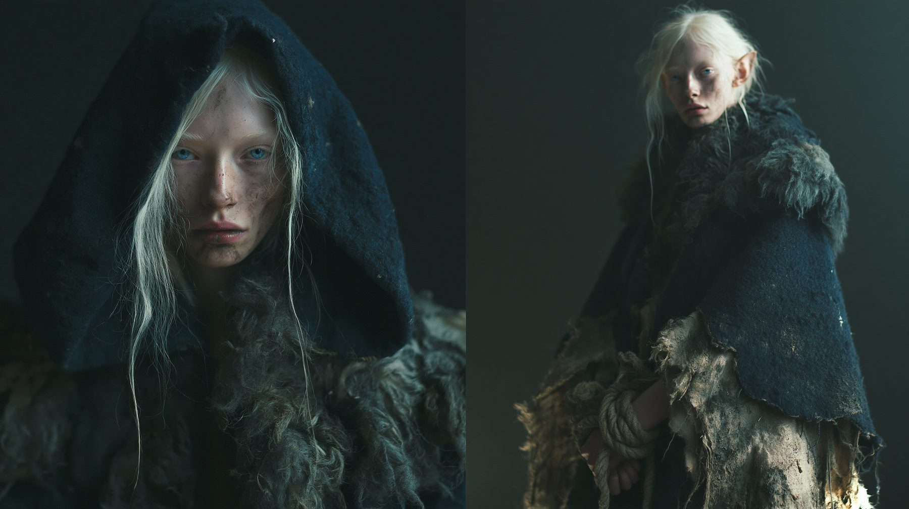
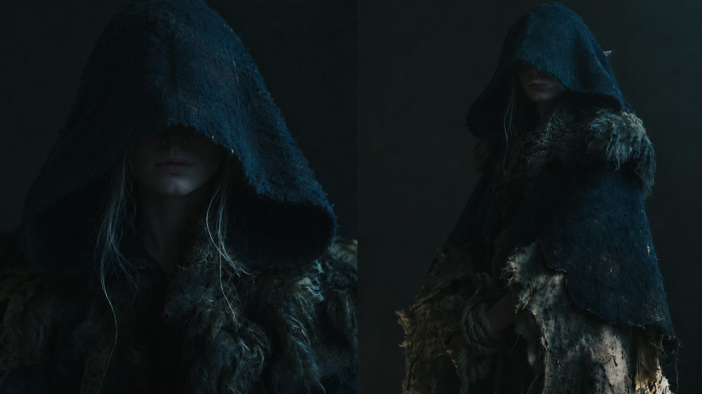
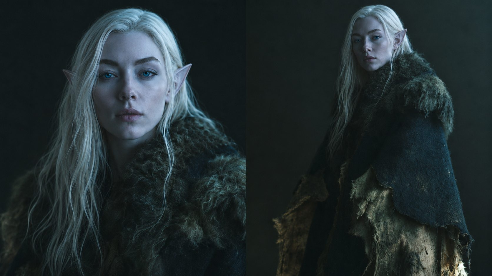
The Executioner
Aelira gets "strikingly beautiful." The executioner gets the opposite dials: "normal human face, plain rough features, mean hostile expression." The ugliness lives in the grime and the expression, not in creature makeup — which keeps Seedance from drifting him into a monster.
Midjourney prompt — The Executioner
Live action photorealistic film still, reference sheet split in two: left frontal close up, right full body head to toe, same man, both sharp. A big middle aged male actor with a normal human face, pale white skin and pointed ear tips, somewhat overweight but not too much, plain rough features, mean hostile expression, executioner type, ash grey hair tied back. Dirty and unkempt: grimy skin, soot stained hands, stained dark leather apron over a worn wool tunic, matted fur collar, thick gloves in his belt, coiled rope over one shoulder, muddy boots. Bright soft studio lighting, even exposure, white studio backdrop. --ar 16:9 --hd --preview --profile r15ir1i
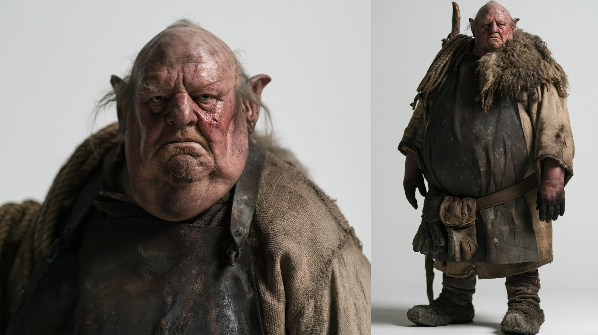
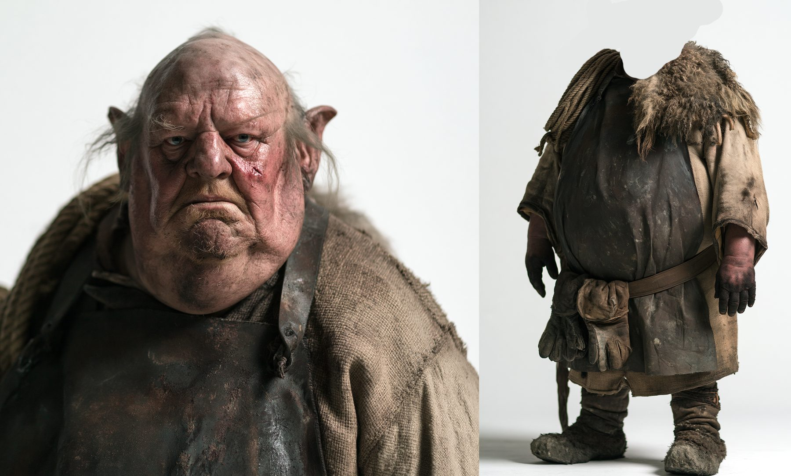
The Villagers
The mob needed to feel like a town, not four extras copy-pasted fifty times. We generated batches of villagers — refined, cold, hostile faces in medieval winter wool — then cherry-picked the strongest in Photoshop and composited them into clean crowd reference sheets: one for faces, one for wardrobe.
Midjourney prompt — The Villagers
Live action photorealistic film still, character reference sheet: two side by side full body portraits, clean division. Left: strikingly handsome older male actor, long white hair. Right: strikingly handsome middle aged male actor, short ash grey hair. Full body head to toe, standing upright facing camera, each centered in his half, both equally sharp. Beautiful refined faces, elegant bone structure, pale skin, subtle small pointed ear tips, cold hostile expressions: hard eyes, tight jaws, quiet contempt. Two completely different faces and builds, no resemblance. No prosthetics, no creature makeup, natural human anatomy. Medieval winter clothing: wool tunics, hooded cloaks, fur lined collars, knitted layers, leather belts, worn boots, muted browns and greys. Ultra realistic wool texture, individual hair strands, natural skin pores. Bright professional studio lighting, large soft key light, fill light, bright even exposure, clean white cyclorama backdrop, cinema camera, raw photographic style. --ar 16:9 --hd --preview --profile r15ir1i
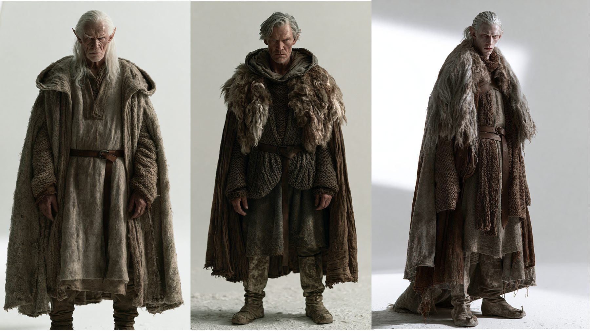
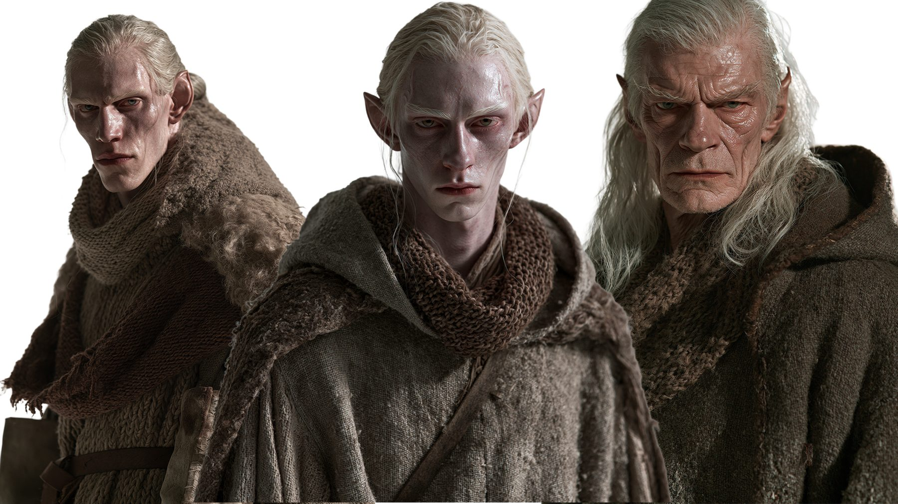
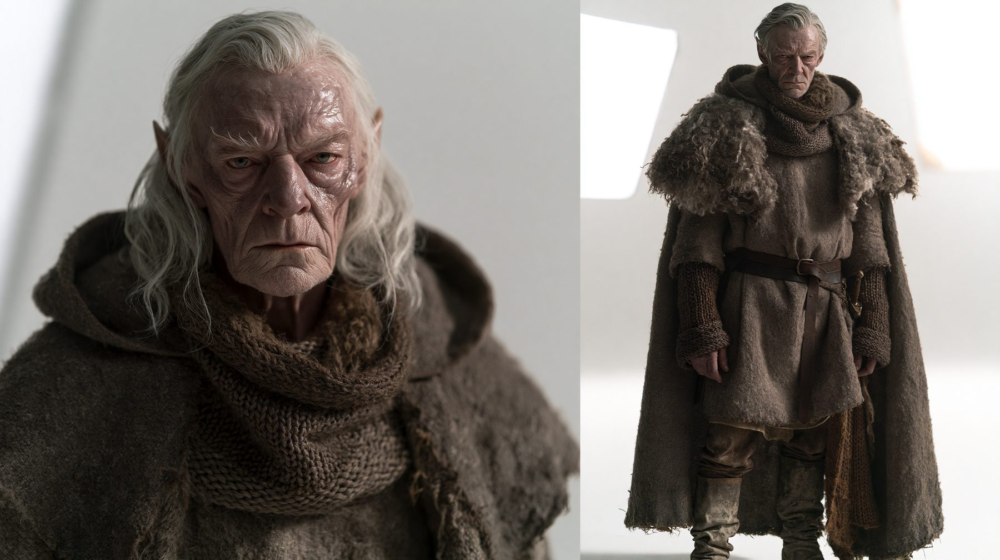
Why Midjourney — and not Nano Banana Pro
Your references set the ceiling for your film.
Here's the lesson that cost us the most credits to learn: the video model inherits the cinematography of your reference images. Feed Seedance flat, evenly lit references and you get flat, evenly lit video — no prompt can fully rescue it.
Nano Banana Pro is a capable model, but its default look is bright and clean — closer to a 2010 TV series or a commercial. Midjourney, with dialed-in style references, produces genuine film-still cinematography: deep shadows, cool rim light, texture, atmosphere. We spent real time refining our SREF codes to lock that look, and it pays off in every frame of video. Same character, both models, judge for yourself:
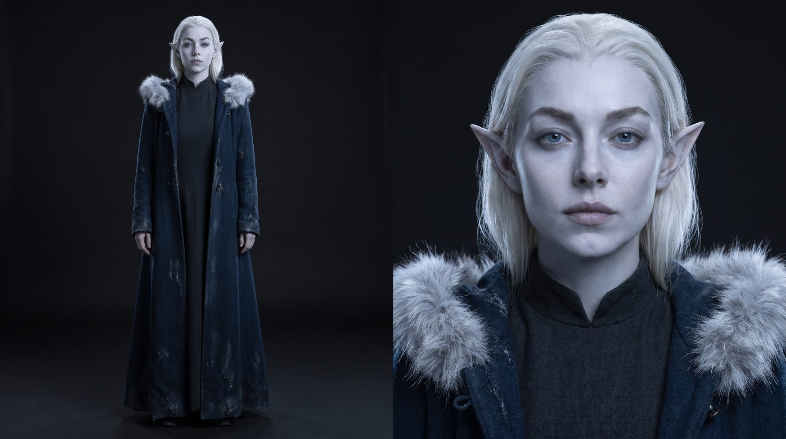
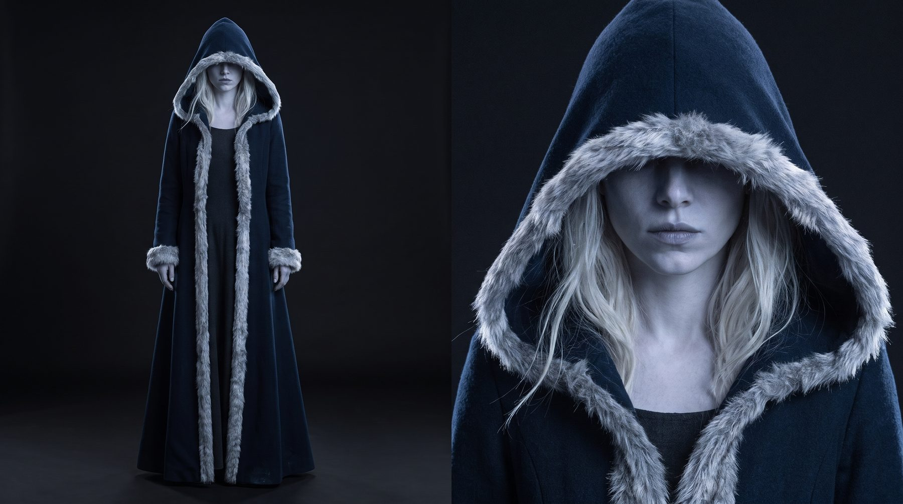
The Execution Ground
One location plate carries the entire hook.
Every Seedance clip in the hook references the same location image, so it had to contain the whole scene: the scaffold and pyre, the blackened T-shaped post, the torch ring, the village at its back and the mountain over everything — at blue hour, in the exact teal-and-torchlight palette the film lives in. Generated in Midjourney, with small details fixed in ChatGPT.
Midjourney prompt — The Execution Ground
Cinematic ground level shot, empty medieval execution ground, snowy edge of a Tudor half timbered village at blue hour. Wide trampled clearing between last village houses and a dark frozen pine forest. Center: raised wooden scaffold of weathered dark timber with rough steps, holding a pyre of stacked logs and kindling. Rising from the pyre: a thick rough hewn blackened execution post, broad as a tree trunk, with a shorter crossbeam lashed near the top with iron bands and coarse rope - crude T shape, not a cross - sturdy enough to bind a person against, scorched from past burnings. Charred remnants beneath snow. A massive snow covered mountain dominates the sky behind, peak catching last cold light. Iron torch brackets on timber posts ring the clearing, torches burning with wind torn flames. Snow heavy pines looming dark one side, village rooftops with faint amber windows the other. Twilight sky fading deep blue to faint orange. Cold cinematic teal blue palette, warm torchlight accents, volumetric fog and haze. Photoreal live action film style, wide lens, low angle framing post against mountain, extreme detail, no people. --ar 16:9 --hd --preview --profile r15ir1i
The Seedance 2.0 Pipeline
Test cheap, render expensive, edit like a film.
With the assets locked, generation follows a strict routine — built to protect both the credits and the look:
Test at 720p — Dreamina
Why pay for 1080 when you aren't sure about the results? Every prompt gets dialed in against cheap 720p tests first.
Iterate the prompt
Each test run adjusts blocking, physics constraints and timing until the shot behaves. Multiple runs per section.
Final — Higgsfield 1080p
Higgsfield's 1080p with non-compression mode is a world of difference above Dreamina's 1080 — that's where finals render.
Edit — Premiere
Best takes cut together, sound design fixed, a little music. The finale alone is several generations edited into one.
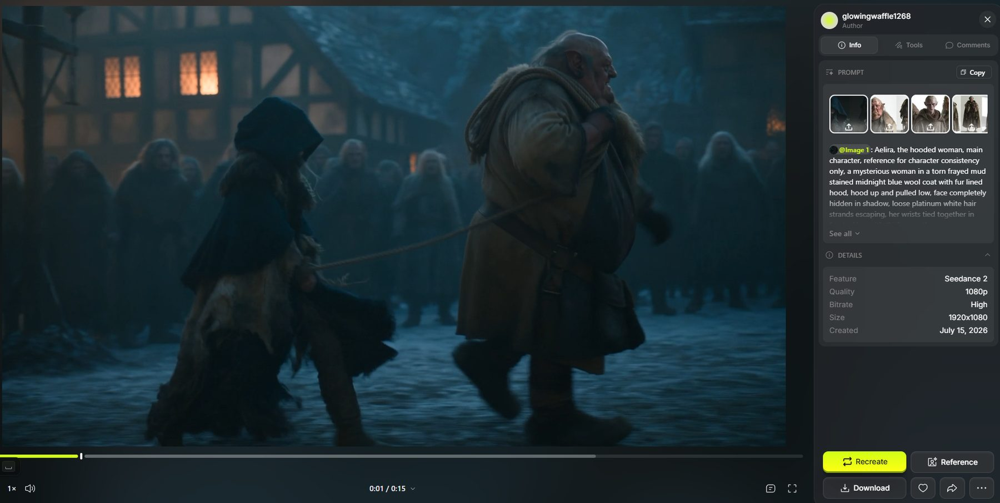
Every prompt is built with a custom Claude Skill we wrote for live-action work. As a cinematographer, I want that smooth handheld feeling where the camera is alive — moving with the action, usually shooting from the darker side. I don't own a set of anamorphic Cooke lenses in real life, but Seedance understands the language beautifully. Each scene is timed and composed to fit inside Seedance's 15-second clip limit, and every prompt names the emotion, blocking and choreography of the characters — that's what makes them feel alive instead of posed.
The Hook, Prompt by Prompt
Five Seedance 2.0 sections, in story order — with the frames they produced.
Each prompt follows the same architecture: numbered reference images, art style, environment, context, blocking, a shot list with purpose / movement / frame / duration, then lighting, physics and audio. Read the blocking sections closely — every "never" and "only" in there is a scar from a failed generation.
The executioner drags Aelira by a rope through the mob, ties her to the post, delivers the sentence, and lights the pyre. The blocking spells out the single-file geometry — who leads, where the rope runs, what she never does — because a video model will happily invent its own.
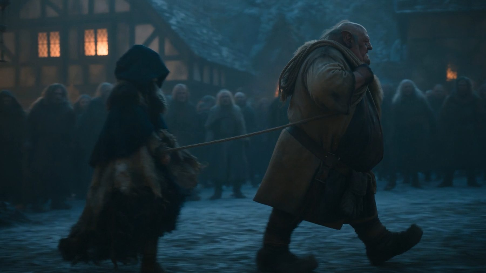
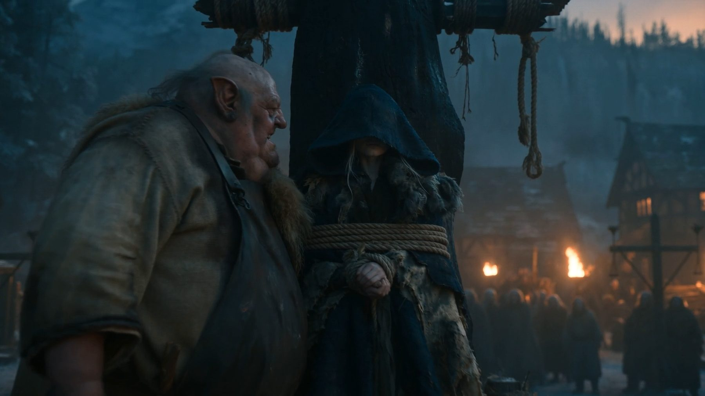
Full Seedance 2.0 prompt — The March
<<<image_1>>>: Aelira, the hooded woman, main character, reference for character consistency only, a mysterious woman in a torn frayed mud stained midnight blue wool coat with fur lined hood, hood up and pulled low, face completely hidden in shadow, loose platinum white hair strands escaping, her wrists tied together in front of her with thick rope, the same rope continues from her tied wrists forward to the executioner's hand, she never holds the rope, she is the prisoner. Calm and untouchable, never afraid, never falling. <<<image_2>>>: The executioner, reference for character consistency only, a big heavy man with a rough mean face, pale skin, subtle pointed ear tips, ash grey hair tied back, stained leather apron, matted fur collar. He grips the free end of her rope in his fist and pulls her along behind him. Brutish contempt, enjoying his work. <<<image_3>>>: The townsfolk mob, close up face reference for crowd consistency, strikingly beautiful pale skinned men with subtle pointed ear tips and mean hostile faces. Furious, jeering, hungry to see her burn. <<<image_4>>>: The townsfolk mob, full body wardrobe reference for crowd consistency, wool tunics, hooded cloaks, fur collars, muted browns and greys. <<<image_5>>>: The location, execution ground at the snowy edge of a medieval half timbered village at dusk, raised wooden scaffold with steps holding a pyre of stacked logs, thick blackened execution post with a short crossbeam, ring of torches, massive snow covered mountain behind. ART STYLE Cinematic live action, photorealistic feature film quality, ARRI Alexa aesthetic with anamorphic Cooke lens character, natural film grain, subtle atmospheric haze, visible breath in the cold air. A deliberately edited sequence with hard cuts between shots, smooth handheld energy inside each shot. Color temperature: cool teal blue dusk pierced by warm orange torchlight. ENVIRONMENT Environment as seen in <<<image_5>>>. Blue hour dusk, trampled snow and scorched ground, torch flames flickering, faint falling snow. A huge crowd of at least fifty villagers packs the execution ground, filling the background and edges of every shot even though the framing stays close. CONTEXT A prisoner is marched to the stake. The executioner leads, she follows on his rope. BLOCKING This is a single file prisoner march. Both characters walk in the SAME direction the entire time, from frame left toward frame right, toward the pyre which is always off frame right. The executioner walks in front. Aelira walks two meters behind him, following in his footsteps, facing the same way he faces. They are connected by one rope: the executioner grips one end in his right fist, the rope runs backward through the air behind him and its other end is knotted around Aelira's wrists, which are tied together in front of her body. She walks only because the rope pulls her forward, her arms drawn slightly ahead of her by the tension. He never faces her while marching, his back is to her. She never overtakes him, never walks beside him, never walks the opposite way, never holds the rope. When he yanks the rope she lurches a quick step forward but never falls. The crowd of at least fifty men lines both sides of their path, faces turned toward her. Only at the scaffold does he turn around to face her and tie her to the blackened post, where she stands facing camera with the crowd massed below. SHOT 50mm anamorphic, very shallow depth of field, mostly close ups, smooth handheld inside every shot. Shot 1 Purpose: establish the march in one image, him in front, her behind on his rope Type: side profile shot of the single file march moving from frame left to frame right, the executioner in front gripping the rope in his fist, the rope stretching backward behind him to Aelira's tied wrists, she walks behind him in the same direction, both moving right toward the off screen pyre, he gives the rope a hard yank and her body lurches a quick step forward without falling Movement: handheld lateral track moving with them, keeping both in frame Frame: he leads at frame right of the pair, she trails at frame left of the pair, the taut rope connecting his fist to her wrists always visible, crowd blurred behind Duration: 3 seconds Shot 2 Purpose: his cruelty up close while marching Type: tight close up on the executioner from the front as he marches toward camera, the rope over his shoulder and gripped in his fist, jaw clenched, behind him in the blurred depth Aelira follows at the end of the rope, pulled along in his wake, both moving the same direction Movement: handheld backward track staying ahead of him Frame: his mean face fills frame, her hooded figure soft behind him at the rope's end Duration: 2 seconds Shot 3 Purpose: her mystery, pulled but unbroken Type: close up on Aelira from the front as she is pulled toward camera, her tied wrists leading in the bottom of frame, the taut rope running from her wrists forward and out of frame ahead of her toward the unseen executioner pulling her, her hooded head held high, face in shadow, dozens of screaming men lunging into the shallow focus from both edges yelling: Monster! and another: Burn the witch! thrown dirt glancing off her shoulders, she never reacts Movement: handheld backward track staying ahead of her, low angle Frame: she stays frame center moving forward, rope exiting frame bottom front, packed crowd on both edges Duration: 3.5 seconds Shot 4 Purpose: the hate up close Type: rapid close up of screaming mob faces along the path, spit flying, fists shaking, more furious faces packed behind them Movement: handheld whip from one face to another Frame: faces filling frame Duration: 1.5 seconds Shot 5 Purpose: the sentence Type: tight two shot at the post, the march is over, he has turned to face her and lashes the rope around her against the blackened post, he leans into her shadowed face and snarls: You will burn in hell, dirty witch, then spits on her hood, she stays perfectly still Movement: slow handheld push in Frame: he at frame left facing her, she at frame right facing camera, the roaring crowd blurred below the scaffold Duration: 3 seconds Shot 6 Purpose: ignition Type: low angle from the base of the pyre, he hurls a burning torch onto the stacked logs, flames catch and climb toward her silhouette as the huge crowd roars in celebration Movement: handheld, torch flies toward camera then flames rise Frame: torch lands frame center, her hooded silhouette above, sea of villagers behind Duration: 2 seconds LIGHTING Warm flickering torchlight as key against cold teal dusk ambience. Firelight licks the edge of her hood but never reveals the face. No glam beauty lighting. PHYSICS One continuous rope from his fist to her tied wrists, always taut, every yank travels down the rope and lurches her forward one quick step, her feet always catch her, coat hangs heavy, breath fogs, thrown debris bounces off her. AUDIO NO MUSIC. Sound effects and their voices only.
The inferno rages with no one visible inside it. Then the cheering falters, one voice at a time, as the firelight drains off the faces and frost creeps over knuckles — and she reveals herself, pulling the hood back with her own hand. Note the blocking: she is invisible in every shot except the last one.
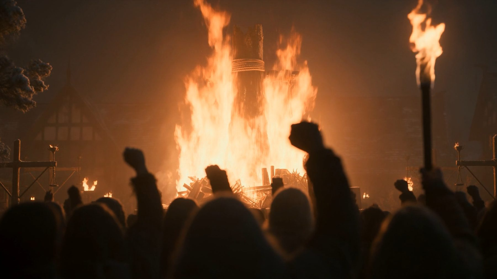
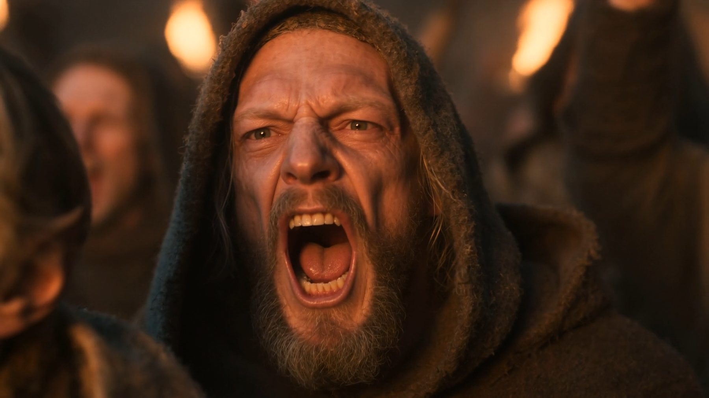
Full Seedance 2.0 prompt — The Fire Dies
@[Image 1]: Aelira hooded, main character, reference for character consistency only, torn mud stained midnight blue wool coat, fur lined hood up pulled low, face hidden in shadow. Serene, free, no ropes. @[Image 2]: Aelira revealed, same woman, face reference for when the hood comes down, platinum white hair, ice blue eyes, pale marble skin, subtle pointed ears. Calm face of a killer. @[Image 3]: The townsfolk mob, face reference, pale skinned men, subtle pointed ear tips, hostile faces. Celebration turning to dread. @[Image 4]: The townsfolk mob, wardrobe reference, wool tunics, hooded cloaks, fur collars. @[Image 5]: The location, execution ground at the edge of a snowy medieval village at dusk, scaffold, pyre of stacked logs around a blackened post, torches, snow mountain behind. ART STYLE Cinematic live action, photorealistic feature film, ARRI Alexa aesthetic, anamorphic lens, film grain, subtle haze, visible breath. Hard cuts between shots, handheld inside each. Color temperature: warm orange firelight draining to cold teal blue as the fire dies. ENVIRONMENT Environment as seen in @[Image 5]. Blue hour dusk, trampled snow. Fifty villagers around the burning pyre. An unnatural cold sets in. CONTEXT The town celebrates burning the witch. Her cold is killing the fire. BLOCKING Scaffold and pyre at frame center in the wide, crowd backs to camera facing the fire. In close ups villagers face the pyre off frame. Aelira stands on the scaffold platform at the base of the blackened post, back against the post, feet among the stacked logs, never on top of the wood. She appears ONLY in the final shot, everywhere else she is invisible, hidden inside the fire. She reveals her face herself, her own hand pulling the hood back, then looks down at the crowd below her. SHOT 50mm anamorphic, shallow depth of field, handheld in every shot except the locked opening wide. Shot 1 Purpose: the inferno, nobody visible inside Type: static wide from behind the crowd, camera locked, fifty silhouetted villagers roaring, fists pumping, shaking torches, a giant fire raging beyond them and growing, a solid wall of flame and smoke, no person visible inside the fire, no silhouette, no shape, only fire Movement: none, locked static, only the fire grows Frame: crowd silhouettes foreground, one giant fire center, nothing inside it Duration: 4 seconds Shot 2 Purpose: the slow turn, confusion creeping in Type: close up on one man screaming with hungry fury: Monster! full cheering around him, bright orange firelight blazing on the faces, then very slowly the fire reflection on their skin dims, gradually fading, cheers trailing off unevenly, one voice at a time, the camera drifting to the man beside him as his cheer falters into slow creeping confusion, puzzled looks, not fear yet, brows knitting, breath fogging thick, he raises his hands puzzled, sees frost on his knuckles, breathes into them, rubbing them, the first hint of dread crossing his face Movement: one continuous drift from the first face to the second, tilt down to his hands then up to his face Frame: faces packed close, warm light slowly draining to cold blue across the whole shot Duration: 7.5 seconds Shot 3 Purpose: hero reveal Type: low angle hero close up on hooded Aelira against the blackened post, real flames still burning around her, smaller and weakened, pushed back by the frost but visibly alive, ice glinting over the logs at the frame edge, then she raises one hand, grips the edge of the hood and pulls it back off her head in one deliberate motion, platinum hair spilling free, ice blue eyes, pale marble skin, calm face of a killer, then her eyes lower, looking down at the crowd below her Movement: handheld, slight push in as her hand pulls the hood back Frame: tight hero close up, she frame center, living flames flickering at the edges Duration: 3.5 seconds LIGHTING Raging inferno as the only key, dimming to cold teal dusk. Her reveal lit by low flames against cold blue. PHYSICS Flames swell then shrink as ice claims the wood but never fully die, frost spreads in crystalline veins, breath fogs, her hand pulls the hood back with real fabric weight. AUDIO NO MUSIC. Sound effects and their voices only.
Added after the first cut, purely to tell the story better: the town has gone quiet and the executioner doesn't understand. One continuous unbroken take — confusion, the look back over his shoulder, and then rage boiling over as he rips the machete free and screams up at her. Every other section cuts hard between shots; this one never cuts at all, and the prompt says so explicitly.
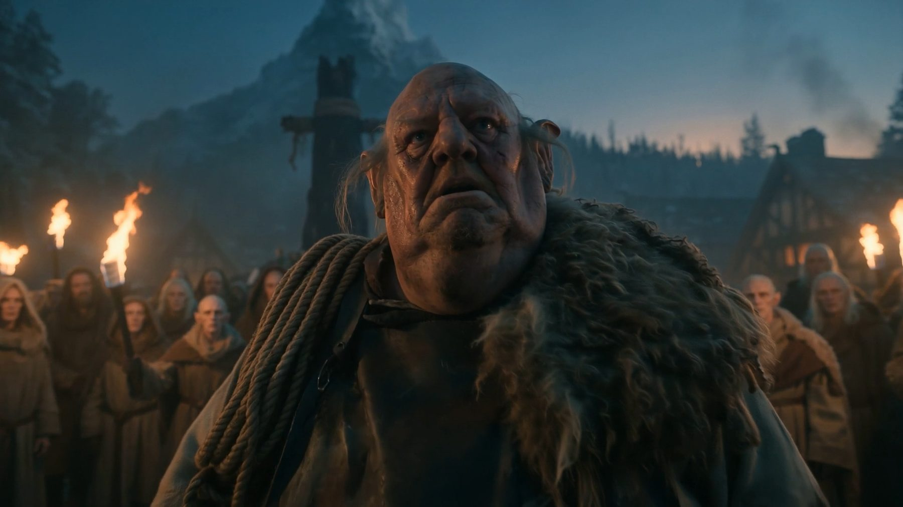
Full Seedance 2.0 prompt — The Silence (oner)
<<<image_1>>>: The executioner, reference for consistency only, big heavy man, mean face, pale skin, subtle pointed ear tips, grey hair, leather apron, fur collar. Silent confusion building into explosive rage. <<<image_2>>>: The townsfolk mob, pale skinned men, subtle pointed ear tips, wool tunics, hooded cloaks. Quiet, uneasy, confused, all looking up. <<<image_3>>>: The snowy medieval execution ground at dusk, scaffold, burned pyre, torches, mountain behind. ART STYLE Cinematic live action, photorealistic feature film, ARRI Alexa aesthetic, anamorphic lens, film grain, haze, visible breath. One single continuous unbroken shot, a true oner, the camera never cuts and never jumps. Color temperature: deep cold teal, dusk almost night, faint torch warmth at the edges. ENVIRONMENT Environment as seen in <<<image_3>>>. Deep blue hour, almost night, the fire has died, frost creeping across the ground, unnatural silence. CONTEXT The fire failed and the town has gone quiet. The executioner does not understand, then he burns with rage. BLOCKING The executioner stands at frame center, facing camera. The pyre is in front of him, off frame behind the camera, NEVER behind him. Behind him stand only the villagers, at least fifty of them filling the depth, nothing else behind him, no pyre, no scaffold, no fire behind him. Several villagers hold burning torches. Every villager looks up past him and past the camera toward the unseen woman above, none of them look at him, all eyelines raised, confused. The woman is above and in front of him but she is never visible in this shot, only him and the villagers appear in frame. His boots stay planted the entire shot, only his head and upper body move. SHOT 50mm anamorphic, shallow depth of field, smooth handheld, tight close up on the executioner throughout. The camera holds close on his face in the sudden silence, his heavy breath fogging the cold air, confusion in his eyes as frost creeps and the hushed crowd behind him stares up past him with raised confused eyelines, torch flames wavering among them. Then in the same unbroken move he turns his head back over his shoulder toward the villagers, the camera drifting slightly with the turn, and none of them meet his eyes, they all keep staring up past him toward the unseen woman, silent and uneasy. Then still without cutting he turns his head forward again and tilts it up, his eyeline rising toward the unseen woman above him, and his confusion hardens and boils into complete blinding rage, his face flushing deep red, eyes bulging, veins swelling at his temples and neck, teeth bared, his whole body trembling with fury, and in one violent motion he rips a machete from his belt and raises it high beside his face, the wide blade fully visible in frame catching the torchlight, and he yells AAAHH! up at her, spit flying, the camera holding tight on his enraged upturned face and the raised blade as the yell tears out of him. One continuous flowing take throughout, no cuts. Duration: 8 seconds. LIGHTING Deep cold teal dusk key, almost night, torch flames flickering warm among the crowd, pale rim light on frost. PHYSICS Boots planted, real weight in his turn, breath mist thick in the cold, the machete has real heft as it clears the belt and rises. AUDIO NO MUSIC. Sound effects and their voices only.
The first kill. This blocking is the most defensive writing in the whole hook — the ice travels up the inside of his body, points emerging only at the mouth, shoulder and arm; boots never leave the ground; body stays whole. Every one of those constraints exists because a test generation broke it.
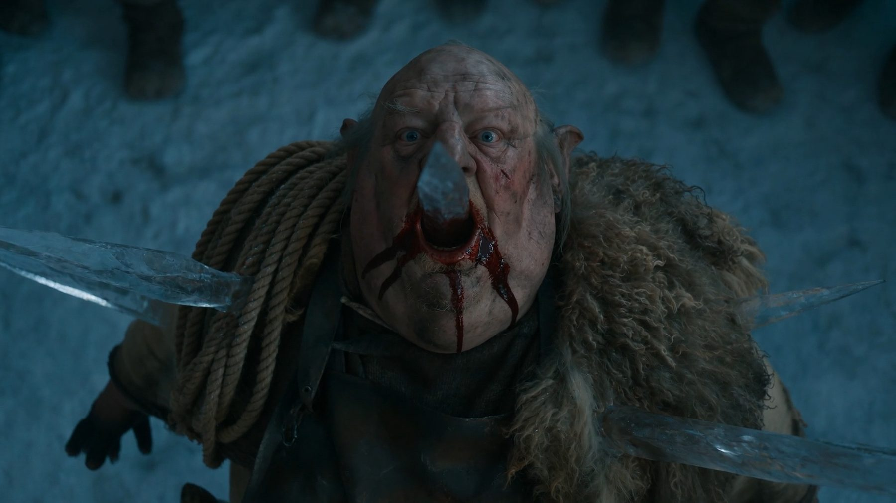
Full Seedance 2.0 prompt — The Executioner Falls
@[Image 1]: The executioner, reference for character consistency only, big heavy man, mean face, pale skin, subtle pointed ear tips, grey hair, leather apron, fur collar. Confusion, then rigid stillness. @[Image 2]: The townsfolk mob, crowd reference, pale skinned men, subtle pointed ear tips, wool tunics, hooded cloaks. Angry turning to terrified. @[Image 3]: Snowy medieval village at dusk, half timbered houses, torches, snow covered mountain behind. ART STYLE Cinematic live action, photorealistic feature film, ARRI Alexa aesthetic, anamorphic lens, film grain, haze, visible breath. Hard cuts between shots, handheld inside each. Ice as violent geometry. Color temperature: cold teal dusk, faint torch warmth at edges. ENVIRONMENT Environment as seen in @[Image 3]. Blue hour dusk, frost creeping, half timbered houses behind the crowd. No pyre, no scaffold, no fire visible in any shot. CONTEXT The fire failed. The executioner falls first. BLOCKING The executioner stands at frame center, machete in hand, facing camera. The pyre and scaffold are in front of him, off frame behind the camera, NEVER behind him, they never appear in any shot. Behind him stand only a packed crowd of villagers and the village houses, nothing else. Only him and the villagers appear in frame, the witch is never visible. He takes one small step back early, then his boots stay planted, never lifted, his body stays at standing height, whole and intact, nothing detaches, no separated limbs, no extra feet or legs anywhere. The thick ice shard travels up through the INSIDE of his body, its bulk hidden within him, points emerge ONLY at: the main point from his open mouth, two or three smaller points from his shoulder and upper arm, nowhere else, never in front of him. SHOT 50mm anamorphic, shallow depth, handheld. Shot 1 Purpose: the ice comes closer Type: starts somewhat wide, following thick ice veins and crystalline frost racing across the frozen ground, closing on his planted boots. He stares down at it, confused, and takes one small step back, the villagers behind him shuffling back too, angry turning to scared Movement: handheld, traveling with the ice toward him, tightening Frame: opens wide on the frosting ground, ends on him and his boots, crowd and houses behind Duration: 3 seconds Shot 2 Purpose: the strike through him Type: a thick jagged ice shard erupts from the ground beneath him and drives up through the INSIDE of his body, faceted and translucent, its bulk hidden inside him, its crown of points breaking out: the main pointed tip pushes out of his open mouth while two or three smaller points emerge from his shoulder and upper arm, one subtle jolt with a burst of frost mist, boots never leaving the ground, body whole and intact, and the machete drops to the ground, the crowd recoiling screaming Movement: handheld fast whip ground to face, then still Frame: tight on torso and head, the main point at his mouth, smaller points at his shoulder Duration: 3 seconds Shot 3 Purpose: top down, final stillness Type: high angle close up from directly above his upturned face, mouth open, the main ice point aimed at the camera, smaller points at his shoulder and arm, blood flowing steadily from his mouth down along the ice, streaking the column red, a last shudder, fingers twitch once, a final wet exhale pushing more blood past his lips, eyes glazing, then total stillness Movement: handheld, slow drift in Frame: his face and the points fill frame from above Duration: 2.5 seconds Shot 4 Purpose: the town breaks Type: frontal medium shot of the motionless standing man at frame center, and behind and around him the villagers erupt in total chaos, screaming, running, scattering in every direction, terrified faces streaking past Movement: handheld, holding frontal on him as the chaos tears past Frame: him still and rigid at center, panicked crowd and houses filling the frame behind him Duration: 2.5 seconds LIGHTING Cold teal dusk key, torch flicker at edges, rim light on the ice. PHYSICS Frost crawls in crystalline flakes, the eruption is fast, body never lifts and stays whole, ice translucent and faceted. AUDIO NO MUSIC. Sound effects and their voices only.
The finale. Honest production note: this one took multiple runs of two prompt variants, and the final sequence is the best pieces edited together in Premiere. The physics writing does the heavy lifting — the freeze must be gradual, spreading back-to-front over the running bodies, never instant and never from the ground up, because "instant" is exactly what the model defaults to. It ends on the shot the entire hook was built for: the smile.
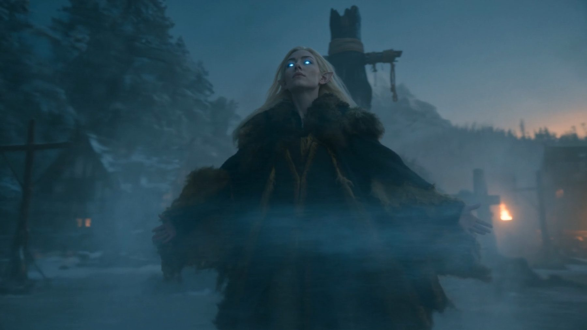
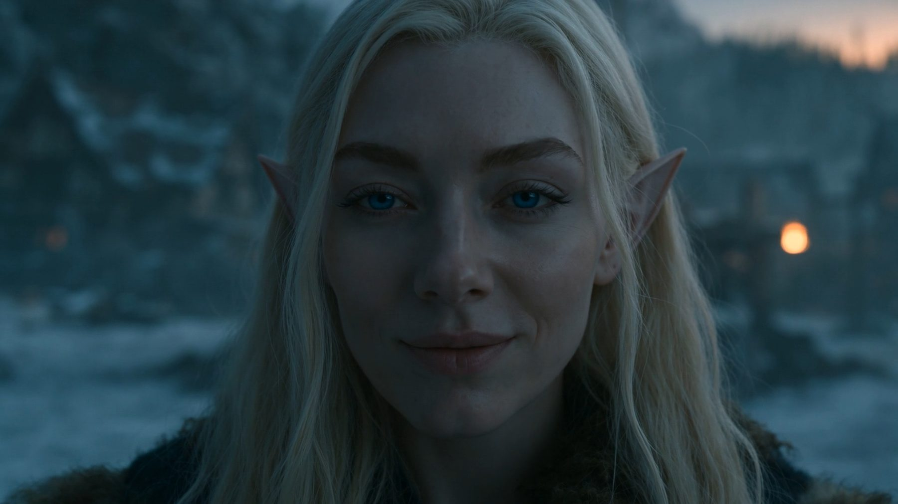
Full Seedance 2.0 prompt — The Freeze Wave (variant A)
@[Image 1]: Aelira, main character, reference for character consistency only, hood down, platinum hair, ice blue eyes, pale skin, subtle pointed ears, torn midnight blue coat. Serene, calm, untouchable. @[Image 2]: The townsfolk mob, close up face reference, pale skinned men, subtle pointed ear tips. Terror, panic, desperation, then frozen solid. @[Image 3]: The townsfolk mob, wardrobe reference, wool tunics, hooded cloaks, fur collars. @[Image 4]: The location, execution ground of a snowy medieval village at dusk, scaffold, burned pyre, torches, mountain behind. ART STYLE Cinematic live action, photorealistic feature film, ARRI Alexa aesthetic, anamorphic lens, film grain, haze, visible breath. Hard cuts between shots, dynamic energetic handheld inside each, close ups and medium shots only, no wide shots. Color temperature: deep cold teal, dusk almost night. ENVIRONMENT Environment as seen in @[Image 4]. Deep blue hour, almost night, frost everywhere. CONTEXT The town that tried to burn her dies together. BLOCKING Aelira stands planted at frame center, already inside the swirling storm. She never runs, never retreats, never moves from her spot. Dozens of villagers sprint outward in every direction away from her. The storm builds around her stationary figure, the blast travels from her outward and chases the runners from behind, striking them from the back, then rushing past the camera as wind only, the camera never freezes, the lens stays clear. SHOT 50mm anamorphic, shallow depth, dynamic handheld. Shot 1 Purpose: the frost tornado, already raging Type: low angle medium shot opening with frost and snow already spiraling violently around Aelira, her arms opening wide, face lifted, calm, eyes igniting glowing blue, the ice tornado tightening and swelling stronger, winds howling, coat and hair thrashing while her expression stays serene, almost pleasure Movement: dynamic handheld, circling in closer as the storm swells Frame: she at frame center inside the spiraling frost tornado Duration: 3 seconds Shot 2 Purpose: the blast Type: close on Aelira as the storm DETONATES, a massive shockwave erupting outward from her body, a visible expanding blast ring of frost and white pressure, the concussive wave slamming past the lens, frame shaking, racing faster than the runners Movement: hard concussive shake on detonation Frame: she at the epicenter, the blast ring erupting past the lens Duration: 2.5 seconds Shot 3 Purpose: the freeze Type: fast tracking shot alongside sprinting villagers in full panic, arms pumping, mouths open screaming, boots hammering the snow, and behind them a visible compact spinning blizzard of frost and snow roars up and SLAMS into them from behind with brutal force, their cloaks and hair whipped violently forward, and the gust keeps traveling and tears past the camera in one quick violent pass, the frame shuddering hard, snow and mist whipping across the lens, the lens staying clear, no frost on the camera, then it is gone. The freeze is GRADUAL, never instant, and it spreads from BACK to FRONT, never from the ground up: ice crusts over their backs, shoulders and cloaks first, then wraps forward down their arms, across their chests and finally over their still screaming faces, strides shortening and stiffening, and across roughly one full second each man goes from sprinting to slowing to completely still, locked mid stride, mid scream, one shielding his face, one reaching for a friend, icicles on arms, faces and garments, then a held beat of total stillness in the settling mist Movement: fast handheld tracking with the runners, jolting hard as the gust tears past, easing down as they slow, settling to stillness with them, holding Frame: running bodies and terrified faces, the blizzard crashing in behind them Duration: 5.5 seconds LIGHTING Deep cold teal dusk almost night, torches die in the blast, rim light on ice. PHYSICS The blizzard hits from behind, the gust passes the camera as wind and shake only, never as ice, frost spreads from their backs forward, never from the ground up, bodies decelerate before locking rigid, they never freeze instantly. AUDIO NO MUSIC. Sound effects and their voices only.
Full Seedance 2.0 prompt — The Freeze Wave & The Smile (variant B)
<<<image_1>>>: Aelira, main character, reference for character consistency only, hood down, platinum hair, ice blue eyes, pale skin, subtle pointed ears, torn midnight blue coat. Serene, triumphant, ending in a cold smile. <<<image_2>>>: The townsfolk mob, close up face reference, pale skinned men, subtle pointed ear tips. Terror, panic, desperation. <<<image_3>>>: The townsfolk mob, wardrobe reference, wool tunics, hooded cloaks, fur collars. <<<image_4>>>: The location, execution ground of a snowy medieval village at dusk, scaffold, burned pyre, torches, mountain behind. ART STYLE Cinematic live action, photorealistic feature film, ARRI Alexa aesthetic, anamorphic lens, film grain, haze, visible breath. Hard cuts between shots, dynamic energetic handheld inside each, close ups and medium shots only, no wide shots. Color temperature: deep cold teal, dusk almost night. ENVIRONMENT Environment as seen in <<<image_4>>>. Deep blue hour, almost night, frost everywhere. CONTEXT The town that tried to burn her dies together. BLOCKING Aelira walks slowly forward through the fleeing crowd, calm and unhurried, then stops and plants at frame center. She never runs, never retreats, stays planted through everything that follows. Dozens of villagers sprint outward in every direction away from her. The storm builds around her stationary figure, the blast travels from her outward in a perfect expanding ring. SHOT 50mm anamorphic, shallow depth, dynamic handheld. Shot 1 Purpose: open on her Type: close up on Aelira walking slowly forward, calm, serene, unhurried, panicked villagers blurring past on both sides, screaming, faces twisted in terror Movement: energetic handheld, tracking backward with her walk Frame: her calm face center, blurred chaos streaming past Duration: 2 seconds Shot 2 Purpose: the frost tornado Type: low angle medium shot, Aelira stops and slowly opens her arms wide, face lifting, calm, eyes igniting glowing blue, then frost and snow spiral upward around her, a violent tightening tornado of ice swelling stronger and stronger, winds howling, air at minus 100 Celsius, everything the blizzard touches flash freezes, coat and hair thrashing while her expression stays serene, almost pleasure Movement: dynamic handheld, circling in closer as the storm swells Frame: she at frame center inside the spiraling frost tornado Duration: 3.5 seconds Shot 3 Purpose: the blast Type: close on Aelira as the storm DETONATES, a massive explosive shockwave erupting outward from her body in all directions, a visible expanding blast ring of frost and white pressure bursting from her, snow blasted flat off the ground, the concussive wave slamming past the lens, frame shaking, racing faster than the runners Movement: hard concussive shake on detonation Frame: she at the epicenter, the blast ring erupting past the lens Duration: 2.5 seconds Shot 4 Purpose: follow the runners, the freeze Type: close tracking shot alongside sprinting villagers in full panic, arms pumping, screaming, the white storm wave roaring up behind them, gaining, overtaking them, they freeze solid mid stride in their running poses, mid scream, faces locked in terror, ice crusting over skin and clothes, icicles forming on arms, faces and garments, then a held beat of total stillness and silence, the frozen statues motionless in the settling mist Movement: fast handheld tracking with the runners, slamming to stillness as they freeze, holding Frame: running bodies and terrified faces, the wave filling frame behind Duration: 4 seconds Shot 5 Purpose: the smile Type: close up on Aelira standing tall, completely alone in frame, no one else visible, nothing around her, serene and triumphant, the glow draining from her eyes back to ice blue, then she smiles, small, cold, satisfied Movement: handheld slow push in Frame: only her, face frame center, empty cold dusk behind Duration: 3 seconds LIGHTING Deep cold teal dusk almost night, torches die in the blast, rim light on ice. PHYSICS Snow and frost obey gravity, then spiral with the rising storm, the blizzard flash freezes what it touches, bodies freeze rigid mid run, icicles form on the frozen bodies. AUDIO NO MUSIC. Sound effects and their voices only.
What We'd Tell You
- Your references set the ceiling. Midjourney's cinematography survives into the video — a flat reference never recovers, no matter the prompt.
- One face per reference sheet. Remove the head from the full-body wardrobe shot so the model has a single source of identity.
- Never write "cinematic." Name the camera, the lens, the depth of field, the movement, the composition — the actual craft.
- Write emotion, blocking and choreography for every character in every shot. That's the difference between performers and mannequins.
- Every "never" in a blocking section is a scar. Write defensive constraints for whatever the model keeps breaking — planted feet, whole bodies, clear lenses.
- Test at 720p, render at the best 1080 you can get, and edit like a film: multiple takes, best pieces, real sound design.
The prompt is everything — and we keep learning with every film. If you build something with these, we'd genuinely love to see it.